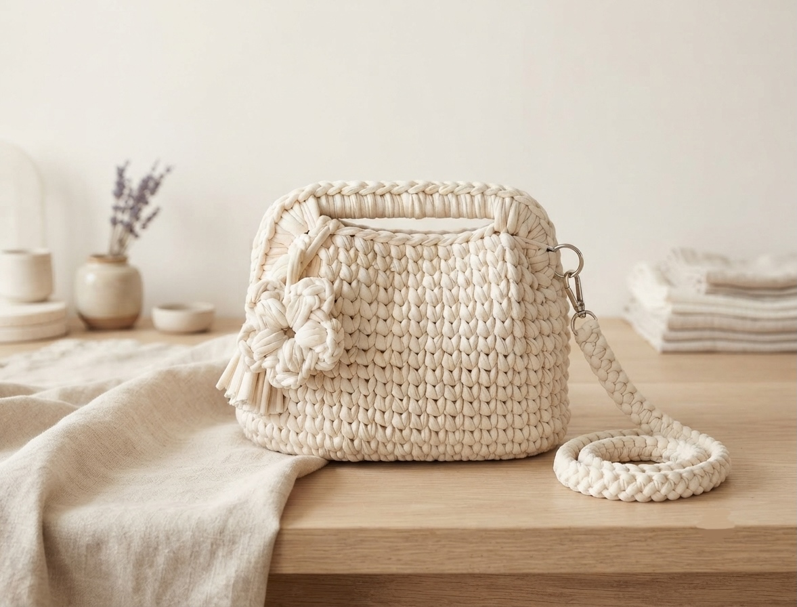

Fatta a mano · Pezzo unico
Borsa lavorata a mano all'uncinetto in morbida fettuccia color panna, impreziosita da un fiore applicato con nappina che le dà un tocco romantico. Comoda da portare a mano grazie al manico, o a tracolla con la lunga catenella intrecciata rimovibile e il moschettone argento. Ogni esemplare è unico e realizzato su ordinazione.